来源：https://shengcaiyoushu01.feishu.cn/docx/THh7dtp6uoEKloxVqwncmmwBn1b
来自：生财有术
作者：港妈金侣
2022年09月21日 19:07
生财圈友，大家好呀！
我是港妈金侣，2008年德国哥廷根大学硕士毕业，一直在外资公司老老实实工作。2020年9月因为孩子要在香港上小学，从宁波搬到香港成为全职妈妈。
不知当时脑子出了什么问题，竟然远程在香港租了一个月三万多房租的“千万豪宅”。一次性付了一年的房租后，也用完了我和老公的一半存款。
来到香港，没工作，成为全职妈妈；我先生也因为疫情，收入大大减少。经济问题是我家当时最大的矛盾。很多人说，钱不是万能的，可是我家当时的情况，因为没有钱，要散了。
2020年下半年，我非常想要赚钱, 一边尝试给各大香港公司投简历找工作，都石沉大海，快40岁的女人呀，真的找新工作好难好难；一边想要通过自认为的专业知识（芳香疗法）变现，可是赚的钱又太少，而且太慢，我的房租，我的每月生活开支太大。
2021年初，我放弃自己的精准专业定位，回归于一个没有专业，没有定位，没有兴趣的全职妈妈，从0开始在线上找副业。
用一年时间，考察了40多个各种各样的副业项目，自己亲自上手了参与了20份的副业，最终找到稳定的8份副业。
2021年1月到2022年8月的20个月里，我累计变现170万+。
就这样，我在香港高额的经济压力下，住在一个四室两厅的海景房里，同时还清了在宁波11年都没有还清了房贷。
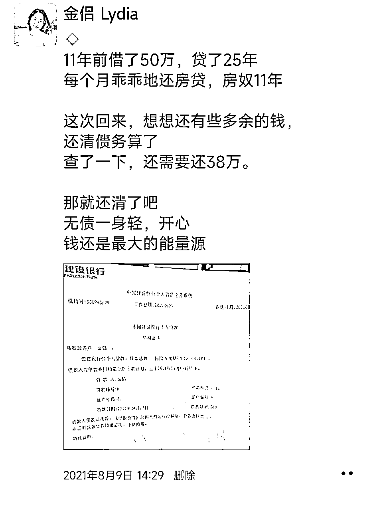
这次花了3天时间，全面梳理我的20个月副业起盘经验，也是自我复盘迭代的过程。
阅读全文内容预计花费15分钟。希望圈友们有几分收获和启发更好，如果没有，全当看故事吧。
内容框架：
2年前，我生活在浙江宁波，是一位在职场工作了12年的普通白领。
2020年９月份，为了孩子拥有更多元化的教育，同时也希望他可以在相对轻松的教育环境里学习生活。我们全家通过香港优才引进计划来到香港，而我也辞掉了工作，成为没有经济来源的全职妈妈。
到了香港后，我一边在linkedin(领英)上投简历，找寻职场工作机会；一边尝试通过个人品牌打造一些线上知识付费课程。
当时我定位的知识付费方向是芳香疗法。
我从2016年开始学习芳香疗法的专业知识，做过上百场全国各地的小型芳疗沙龙，拥有国内外多个权威证书，是国际认证芳疗师，还在宁波电视台上讲解过芳香疗法的知识。
我期望把线下课程改转成线上，打磨专业的芳疗线上训练营，或是精品录制课程。
就这样，我先花了2个月时间，在荔枝微课上，录制了《家庭芳疗护理师的60个配方》的课程。课程录制后，却发现根本没有任何陌生用户购买我的课程。
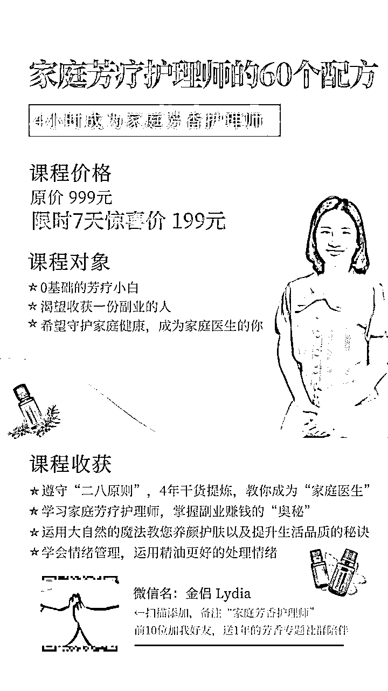
我就想通过在视频号平台上，输出专业的芳疗内容引流到私域。就这样，又搞了2个月，前前后后，费时费力地生产好内容，期望可以获得源源不断的用户，拼尽全力搞流量，可是也没有非常大的效果。
一下子，我受到了打击，同时对自己的能力，对前进的方向，产生怀疑，也对未来越来越迷茫和无助。
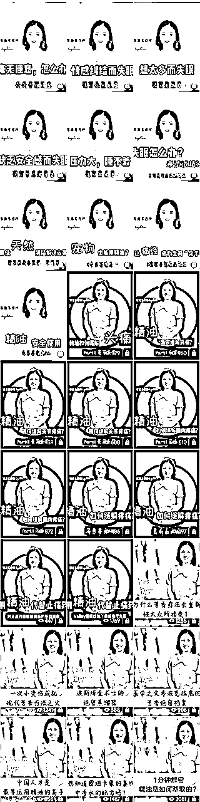
现在想想，当时的我陷入一个致命的线上变现误区。就是我在闭门造车，没有学习，没有向上寻求专业的帮助，而是靠自己原本狭隘的认知，去努力地解决出现的问题，却又陷入一个又一个的困境。
到了2020的12月份，全港中小学因为香港的第四波疫情停课，孩子只能全天呆在家里，而我对自己未来的变现之路，也越来越迷茫。
我们母子二人，每天睡觉睡到自然醒，起床吃饭后各玩各的。我躺在床上看看小说和连续剧，孩子自己画画和玩，可是不知道为什么这样相互不打扰，并且毫无压力的情况下，亲子关系却没有变得更融洽。
圣诞节前夕的一天，我在看小说，孩子在画画，
他问我：“妈妈，你能在边上陪着我画画吗？”
我说：“我现在不是在沙发上坐着陪你吗？”
我不理他，孩子在家里一遍又一遍地大叫：“你能别看手机吗？就坐到我的边上来看着我吗？”
不知为什么，我心里特别生气，我觉得孩子不理解我，我在沙发上看手机，不是也是陪在他的身边吗？为什么一点点小事而大叫呢？
我觉得自己孩子的个性非常自私偏激，心里的火越烧越旺，在他大叫地时候，我走过去狠狠地打了他一把掌，并恶狠狠地盯着他说：“你不能好好说话吗？你再叫，我就再打你。”
这是他出生以来，我唯一一次打他，孩子瞬间非常非常伤心地大哭，露出了很害怕的眼神。
就在那一刹那间，我意识到了：我无法理智控制我的情绪。
这已经不是原本正能量，善于规划的我。看到每天一笔笔生活开支，却没有任何破解之道，让我陷入高消费的焦虑中。我只能用表面的平静来掩饰内心的不安，然而一点点小事就可能引发我情绪的失控。这既伤害了我，又伤害了我最爱的孩子。
全职妈妈，如果在周而复始的生活里，渐渐迷失了自己，找不到生活的意义，情绪也会失衡。因为孩子，我成为全职妈妈，是希望带给他更好的教育和家庭环境，而现在情绪失衡的我，显然不能。
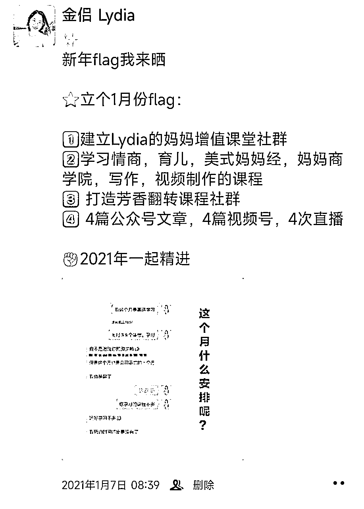
“靠自己不行，那我试试付费学习，跟着别人从0开始。”
2021年1月，我报名了9个线上课程，建立了妈妈增值的微信社群，通过输出的方式倒逼自己输入知识，而这也是我的线上副业的正式启航，同时现在回头看，也是正确的一步，就是学习。
普通人比大咖有的优势是什么？比专业，比资源，比能力，比技术，比经验，我们真的都不行。
那能弯道超车的优势是什么，我觉得就是时间。
用更多的时间去学习，提升自己的技能，尝试大咖或是厉害的人没有时间赚的小钱，夹缝里总会有些闪闪星光。
我的副业集中在下面3种副业模式里：
第一种模式：平台合作型副业（多特瑞，群买买，妈妈不烦）
第二种模式：技能服务型副业（国际采购，香港资源，平台兼职）
第三种模式：自主运营型副业（付费社群，训练营，荔枝微课）
身边借助平台来开启副业的人特别多，这个也是小白最容易入门的副业类型，包含了实体的产品，或者是知识付费课程。
能赚到钱的核心，就是通过你的流量和销售能力拿推广佣金。
1.1 多特瑞精油推广
2016年，我接触到的第一份副业，是推广一个美国的精油品牌-多特瑞。
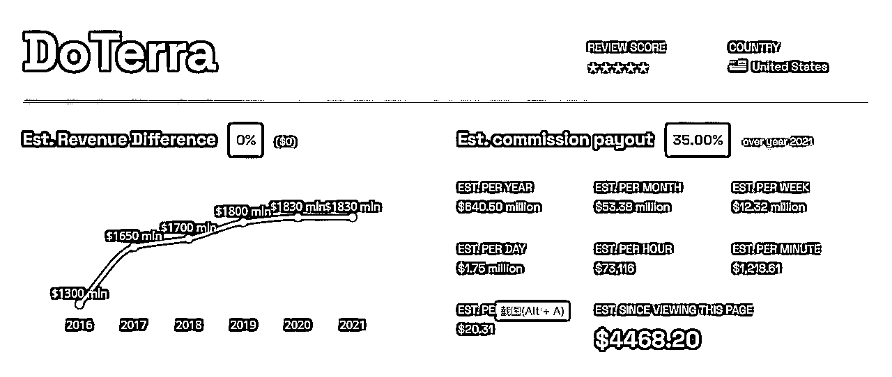
当时的模式，主要还是以线下的讲座，沙龙的场景，推广用户购买精油，同时提供后续的服务。
这是一个直销公司，会员制模式。虽然开发新客户比较难，但是老用户的复购率还是不错的，现在对我来说，这是一份低管道收入。
这个副业，一直持续到现在，前几年基本上每年都会有20万左右的收入（包括销售精油产品的佣金和芳香疗法的认证课程）。
但是疫情后，线下活动减少，同时我在2020年9月搬到香港，目前收入减少4到5万一年。
副业建议：直销产品以保健品，美妆和减肥代餐类为主，推广底层逻辑是，学习，体验，分享，事业。
所以刚开始进入这个行业，就是需要大量的学习，同时要自购产品体验，有了自己的用户见证，才能更好地推广给周围的朋友，另外需要提升自己的专业能力，分享的人多了，收益高了，再开启自己的事业，或是全职。
存量时代，好产品泛滥，直销类好产品的优势不再大了，推广难度会比以前大。但是如果推广的产品，有你本身的个人经历见证，很有说服力，同时你也希望长期学习这个方向的知识，还是值得尝试的。
去年8月份，我开始搞社交电商 - 群买买。这是一个0风险0投入的社交分享型副业。我用一些零碎时间的推广，到目前为止，也赚了7万4左右收益。
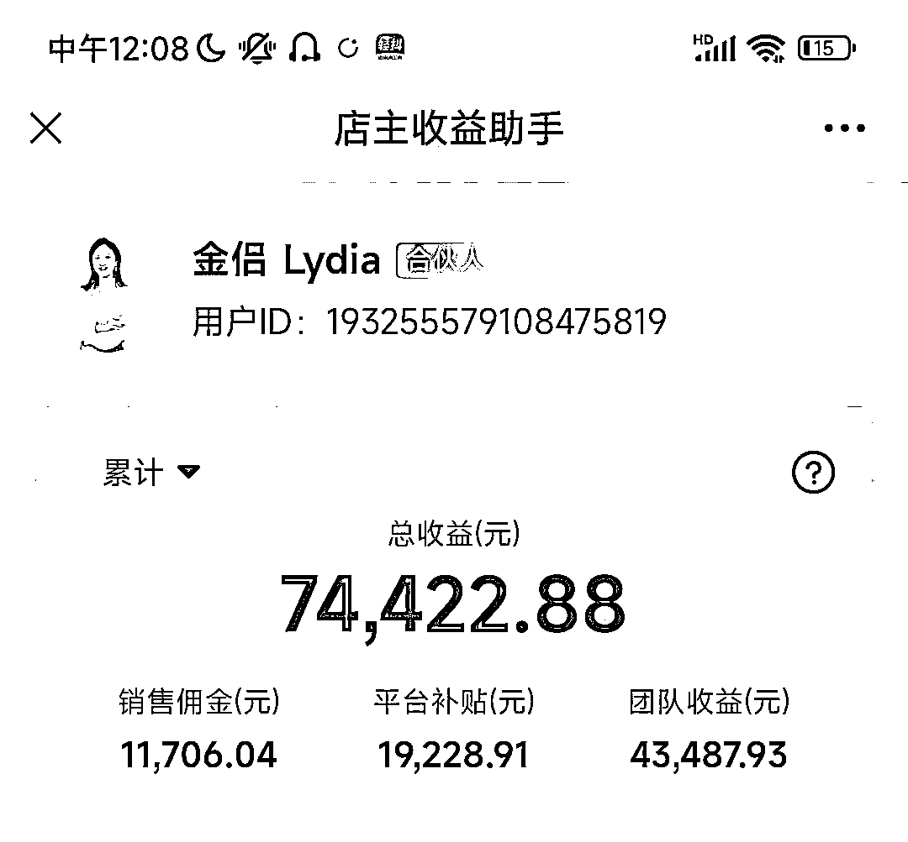
副业建议：社交电商与微商相比，它0投入，0风险，同时产品线大而全，类似于一个超级市场。
从事这个类型的副业，需要稳定而持续的流量获取能力，和选品能力，这绝对是一个大浪淘沙的项目。99%的自用用户+1%推广分享者。0门槛，同时不需要太强的私域技能，没有太高沉默成本的副业项目。
妈妈不烦是一家女性商业教育的平台，有50万付费女性用户。
这也是去年1月份，我报名9个付费课程之一。
在这里，我学会了私域变现的几大能力（短视频直播，社群运营，顾问式销售），也推广这个课程给超过500位身边的女性朋友，获得了近38万的收益。
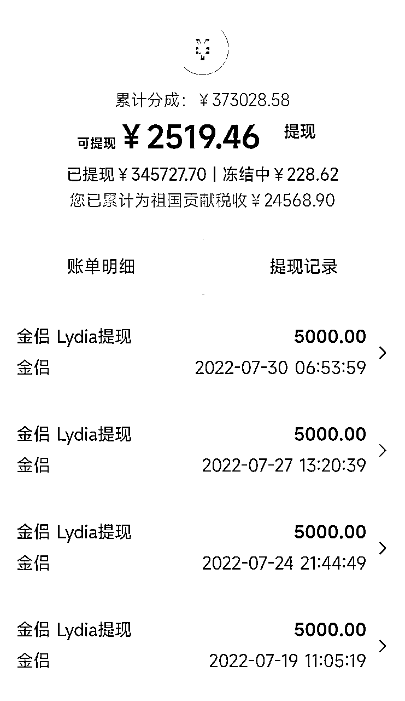
副业建议：在私域里推广知识付费的课程，本质还是靠你自己去吸引别人。别人先认可你，信任你，进而选择你推荐的课程，所以你的人设，你的收获与你推广的课程匹配度非常重要。
只有自己通过付费课程本身的知识或是技能获益后，再推广，才会更有说服力。
总体来说，所有平台合作型的副业，我们提供的是交换价值。产品和服务是别人的，我们通过转化流量，从而赚取收入。
这类的副业，核心是用你的时间或是技能为他人提供服务，从而得到的劳动报酬。目前技能服务型副业，我从事主要是分三块收入：
因为香港疫情，原来很多常来香港购物的朋友，无法入境香港购物，同时香港的很多产品都大打折，就这样我开启了香港代购。
这算是我来香港后的第一份线上副业，给我带来了近10万的收入。
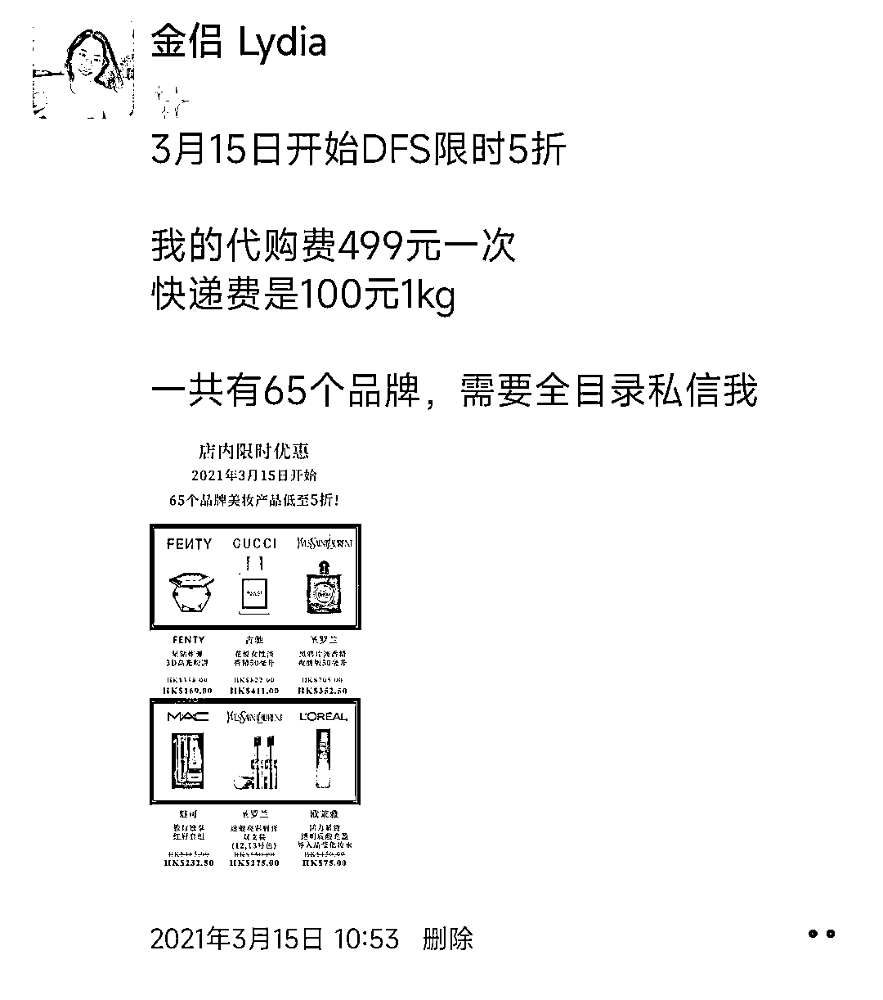
我同时也在学习香港保验、海外教育、移民、医疗板块的相关知识。虽然没有正式开始变现项目，但是也积累了很多用户的需求。这类的副业，虽然是提供服务，本质还是信息差+地域差+人脉。
副业建议：平时可以跨行业多接触各种信息，通过地域差，信息差，找到为他人提供价值的机会。
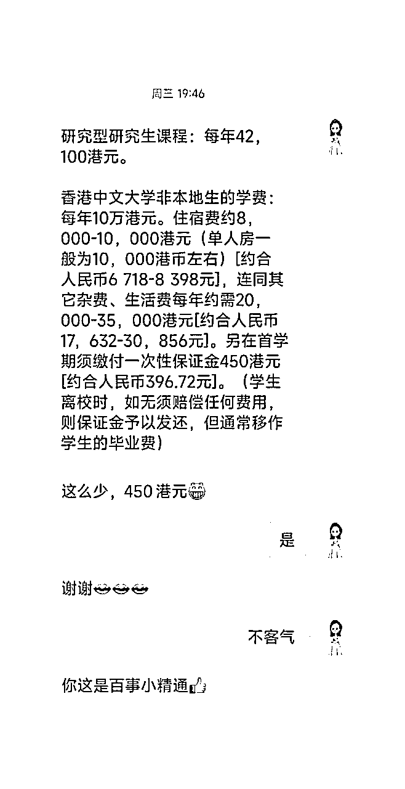
从自己原本有的经验和能力出发，找到一些采购兼职工作，这部分的收入，可能不稳定，所以不断地寻求新的机会，同时兼职多家公司，可以弥补这部分的不稳定。
工作的方向是以项目方式接单，拿佣金或是咨询费，时间比较自由。我核心采购的行业是宠物用品和户外家具，今年开始搞美国电子芯片。
目前这部分收入占到我总收入的一半以上。总体来说，能接到公司服务类的工作机会，报酬还是很可观。
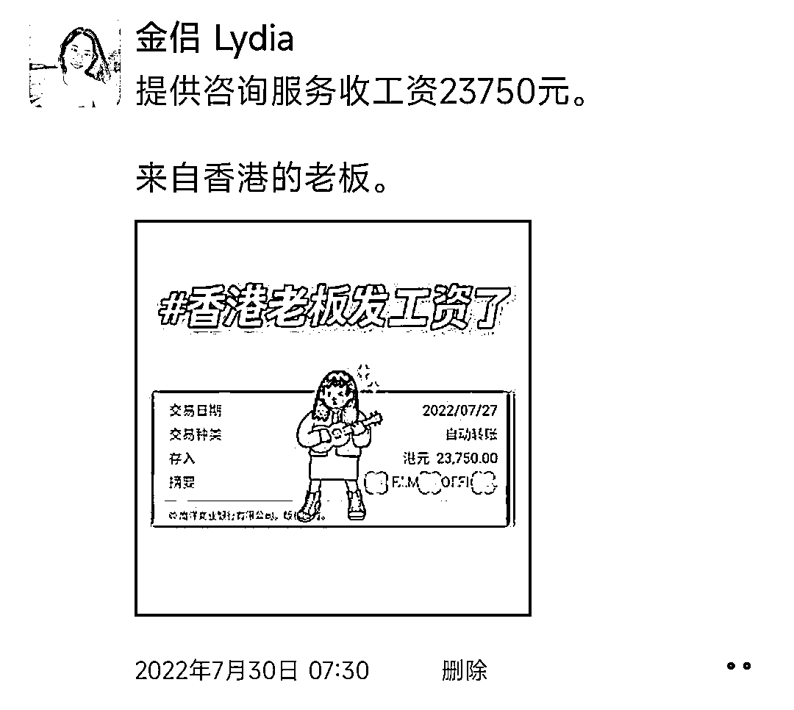
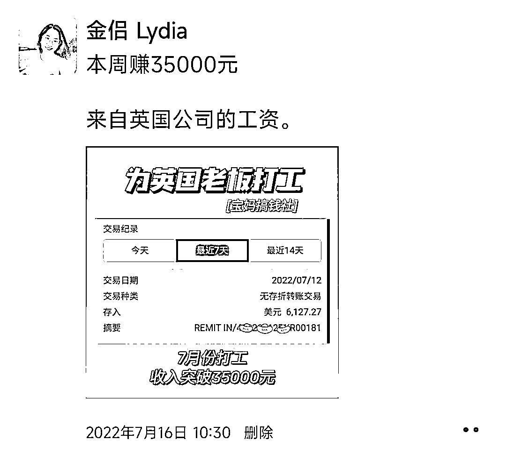
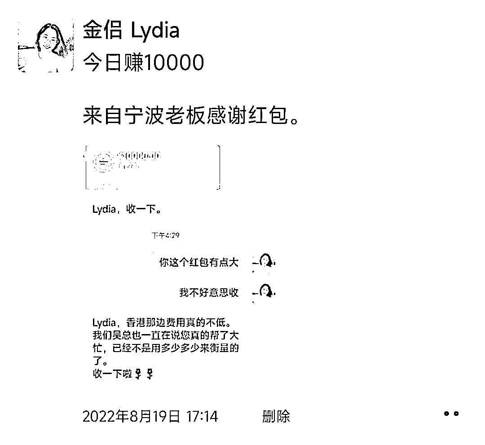
虽然我来到香港，没有了全职工作，但是我以前工作能力和经验，还是在的。即使是兼职工作，我也会把每一个老板布置的每一项工作任务都做透，做实。所谓“近者悦，远者来”，我的工作机会就是这样，一个老板介绍另一个。
副业建议：这类工作应该可以算是一种兼职，需要基本的工作能力。比如：做事要，耐心、有条理、不抱怨；沟通方面要，主动积极，逻辑清晰，能站在对方的角度想问题。
更重要，就是靠谱，成为一个靠谱的人，从长远看，会给你带来人品红利。
很多线上知识付费的平台，我们参加课程学习后，除了推广课程外，平台内部也会提供一些有报酬的工作机会，比如常见的社群运营官，主播，私域操盘手，课程咨询服务，助教等。
我从去年10月开始在一家女性商学院里，参与平台里的课程咨询服务工作，帮助一些对未来迷茫的女性提供咨询服务，变现了2万元。
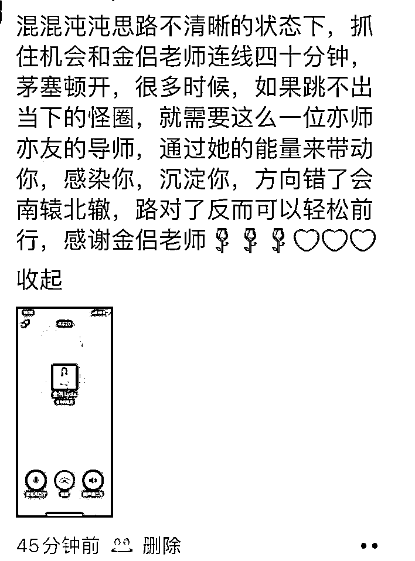
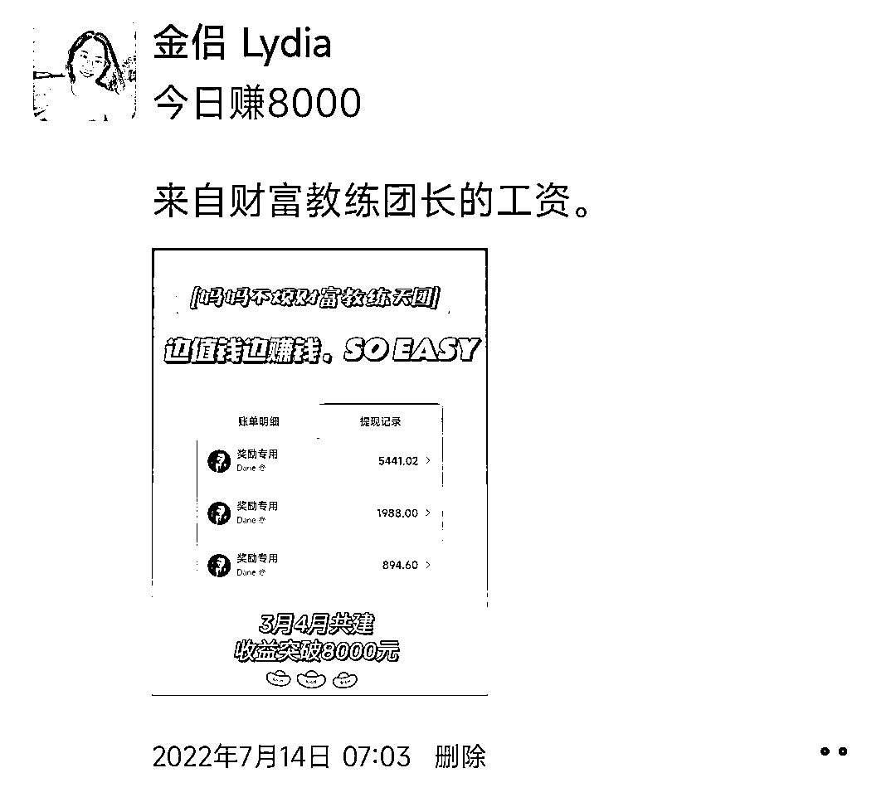
副业建议：在知识付费平台里的兼职工作，赚钱可能不是很多，但是能最直接了解平台运营的模式，也能在工作中，通过输出更好地输入和吸收知识，快速提升自己能力，所谓“先值钱，再赚钱”。
这种类型也谈不上是副业了，可以说是个体创业。因此，难度相比模式一和模式二，都要大。
一个人要打造一家自运营公司，产品，流量，销售，服务都是一个人来运营。
我最开始希望通过芳香疗法专业变现，就是自运营型的个体创业。但是我对线上变现没有全局的商业思维，单靠自己固有认知去行动，没有拿到预期的正面反馈，而迷失了方向。
后续学习后，为了快速变现，我转变了思路，从现有的用户出发，靠近用户，发现用户的多种需要，打造她们需要的产品或是课程。
意思就是，我准备了多种工具（能解决用户不同需求的产品或课程），看见钉子就拿锤子，看见西瓜就拿菜刀，脱离锤子思维，那我的变现路径就更多元化，同时变现速度加快，缓解了我的经历压力。
补充：什么是锤子思维？
它的意思是，当我们大脑里面只有一种思维或者工具或者方法时，我们做任何事都会用这种思维或者工具或者方法来解决和分析。 在我看来，从变现角度出发，就是觉得变现的产品和课程非常单一，不愿意改变。
当我改变思维后，会非常快速启动多个知识付费的小课，找到适合我的最小的变现闭环。
比如，面部塑形的训练营，面部瑜伽俱乐部，7天小白赚钱班，妈妈医生小课堂，女性增值社群，21天生命故事写作营，副业项目拆解年度会员，闺蜜星球，视频号启动营等等。
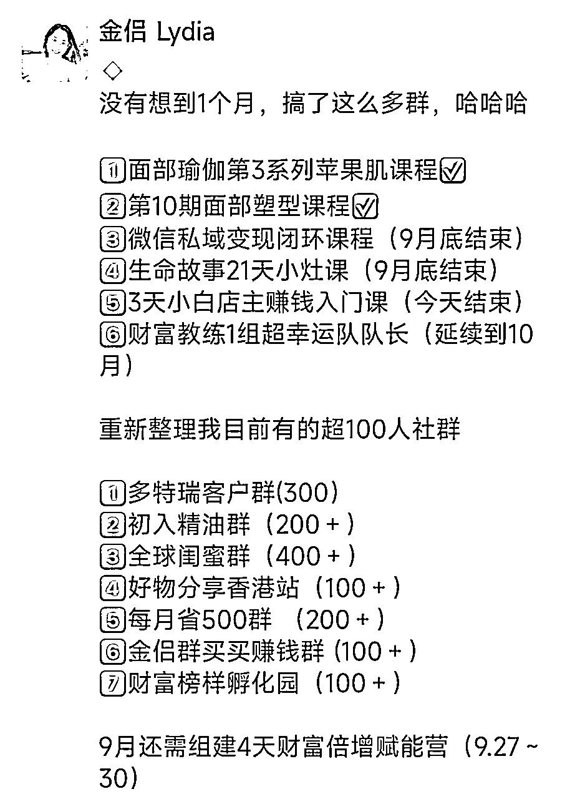
其中面部塑形的训练营，我从报名她人的课程，听课不到3天的时间，我同步启动我自己的课程招募，边学边教。这个训练营，我做了13期，每个月都招募一期。
大部分的训练营基本都是在365元到899元间，2-3个知识付费的课程同步运作，基本上都是我自己独立运用。有时忙不过来，就招一个助理，也给我带来了30万的收益。
一般的模式，就是荔枝微课，一对一指导，社群答疑，还有每日腾讯会议教学。训练营每次招募20个人左右一班。
副业建议：这类的副业，你不需要太专业才开始，而核心就是用户需求（变美，变有健康，变有钱），在你的服务和课程上给出客户到愿意承担的价格，然后用心对待每一个用户，精耕细作课程，小步快跑，快速迭代。
缺点就是需要投入大量的时间和精力，同时大部分的付费课程没有复利性。
在亦仁的收藏夹里，他分享过《人生有两种驱动力》，一种是vision（愿景），一种是pain（痛苦）。
他说：“能做到vision driven的很少，但适合pain driven的人很多；大多数人因为有痛苦，而改变。” 对来我说，“爱”或是“恐惧”就是我的原始驱动力。
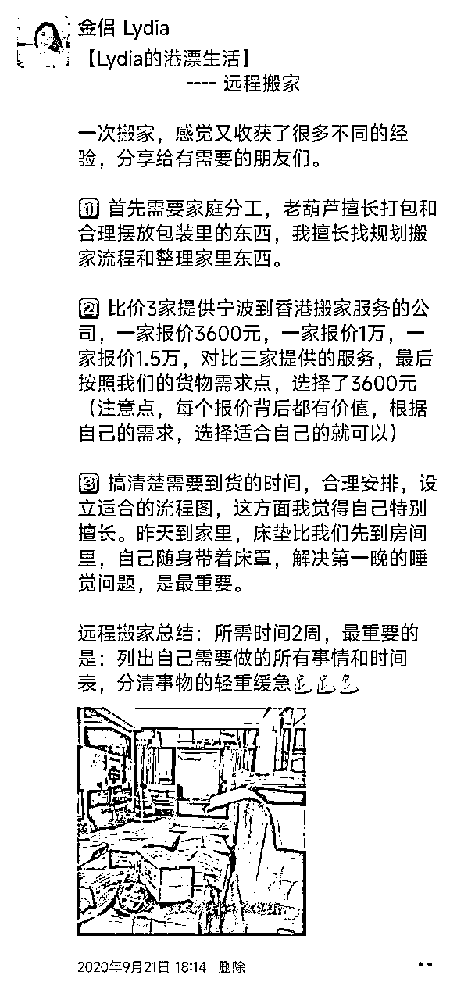
因为对孩子的爱，驱动我从宁波搬到香港，辞职成为全职妈妈；而来到香港后，我又因为对未来经济上的恐惧，不得不开启线上副业。若没有爱与恐惧的驱动，不会有今天的局面，我可能一辈子就是一个生活在宁波，拿着死工资的职场人。
现在，我在多副业项目里拼搏着，也是希望通过自己努力，少一点对未来的恐惧，多一些人生的把控权，维持自己有“爱”的生活。
我遇到过很多宝妈，想搞副业，但是没有多久就放弃了，大部分是驱动力不足。看到别人赚钱，也想试试，做了一阵子，效果不如预期，就放弃了。
在尝试开启副业之前，一定要想清楚，自己为什么要开始？你做这件事，到底是为了“爱”还是“恐惧”，是“痛苦”还是“愿景”。比如，当渴望让孩子过更好地生活或是教育时，“母爱”的驱动力真的很强。
开启副业，最难的内心卡点，就是要不断地突破舒适圈，因为改变就是一种特别反人性的行为。比如：
身份改变：16年7月份，我开始搞副业，做精油推广。一个在温开水里呆了10年的外资白领变成精油的推销员，遇到过无数次的不理解和嘲讽。我的父母也跟我说，你搞这些“偷偷的”，千万别推广给家里亲戚，太丢脸了。
学习卡点：为了要更好地推销产品，唯有变得更专业。就这样，我又不得不学习医学、健康管理、植物学等等多门学科。白天上班，晚上管孩子，空余的时间，都在学习，而我又是一个特别不爱学习的人。
回望这些年我的同龄人，大多数人有了稳定的工作，没有经济顾虑，呆在舒适圈。要突破舒适圈的核心，还是在于内心的笃定和驱动力，所以请不断地加强你的驱动力，
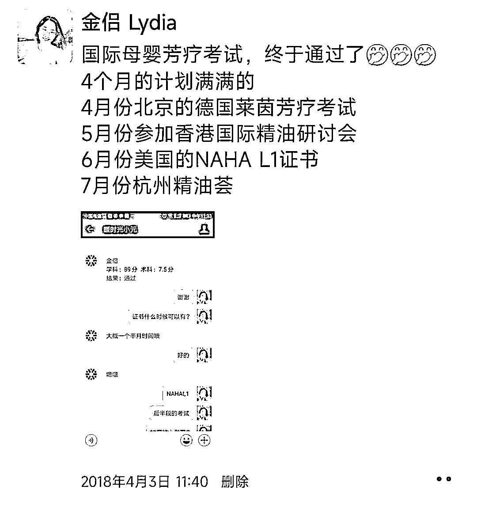
线上副业最大的难点，就是你与陌生人之间产生信任，进而建立互惠关系。
获得流量，其实不难，最笨的方式，就是像我一样，在各种微信群里加人。我就是去年1月开始，报名各种付费课程，1月份报名达到了9个。之后，我的私域流量每个月以300-400人速度上涨，6月份6000人左右，现在有近7000人。
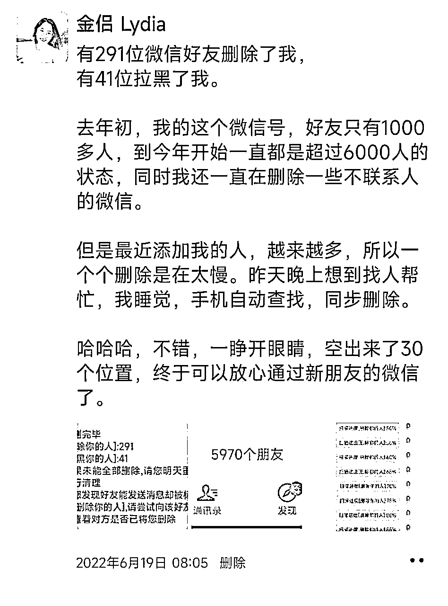
我们进入微信群后，想要扩充流量，都会添加社群里新朋友的微信。通过后，很多人会发个人介绍，主要是写明自己能提供的价值。
但是如果你是一个普通人，真心很难让新朋友通过你的个人介绍，能与你产生有信任度的链接。而信任又是私域副业变现的核心，我的方法就是是真诚和互惠。
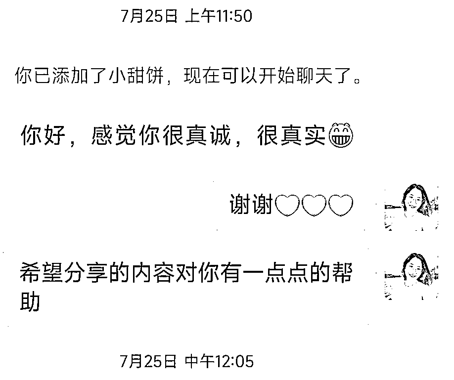
大家有没有听过一个水牛和“黑卷尾”的小鸟的故事？
水牛在河边慢悠悠的觅食，甩着尾巴驱赶身上的小虫子和苍蝇，有一种学名“黑卷尾”的小鸟喜欢停留在牛身上，以牛身上的各种小虫为食，累了就停在牛背上歇息。
牛能感觉到身上有小鸟，但是并不反感，甚至很喜欢小鸟停在它们身上，不仅可以吃掉牛身上的虫子，还时不时帮牛挠挠痒痒。就这样，黑卷尾和水牛之间形成了和谐的相互依附关系。
自然界中和谐的共处，为我们提供了典型的互惠原理案例。
牛和小鸟之间从各自身上得到好处而和谐共处，这也是人类文化中最有效的影响力武器之一：“互惠及其亏欠还债感”。
找到一些高质量的社群，比如生财有术，成为航海志愿者，真诚地为大家服务，这就是为信任建立打开了的门。
不要总想着自己的变现项目，目地性太强地与他人链接，而是链接后，真诚点，没有目的，只是纯粹地交友，就像小鸟与小牛一样，真诚地建立互惠关系。
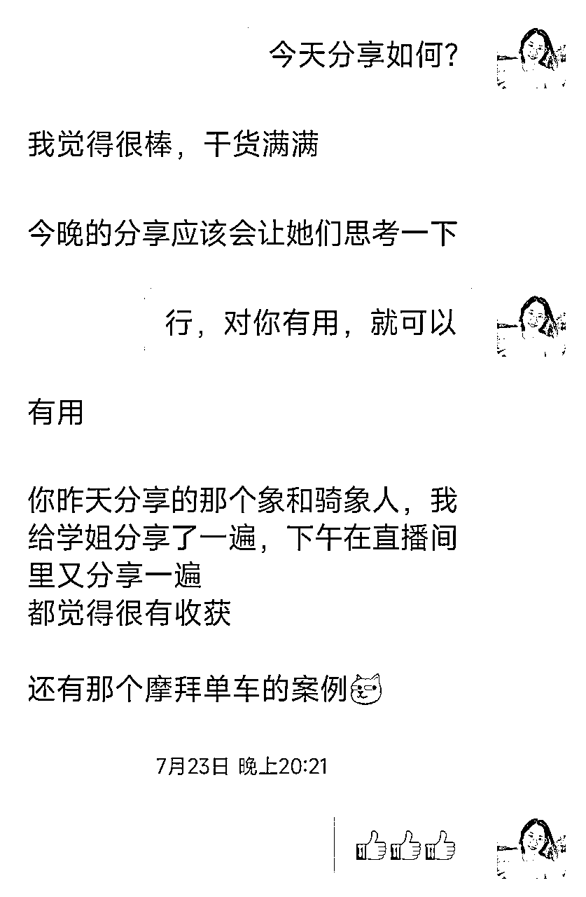
总结：内驱力的核心就是找到内心的“WHY”，当"WHY"足够强大，你才拥有了改变的动力，去一步步地突破舒适圈，这两个基是内因。
而对外来说，人与人之间，真诚是打开一切的捷径，而没有任何的捷径可以通向真诚。我自己就是这样，真诚地打开链接力，不断地与他人建立互惠体系，后续再根据客户的需要找到副业项目，变现路径越来清晰，越来越多样化。
没有专业，没有兴趣，也没有经验的普通女性在赚钱路上，首要明白自己在这一段时间里，想要做的是创业，主业，副业，还是兼职。
因为你对赚钱项目的定位不同，所花的时间和精力不同，预期会不同，最终的结果也是不同的。
比如我，刚开始在香港的时候，我特别缺钱，想要快速变现，那最快的变现方式，就是找一份稳定工作的主业。
当主业找不到的时候，我想通过芳香疗法的付费课程变现，那其实是一个个体创业之路。但是我是希望陌生流量快速变现，就是做好芳疗录播课程后，能马上有一批用户下单，就是这样预期判断不准确，才导致后面失望和迷茫。
后面我快速调整，我走的路线就是就是无专业的兼职和副业。
如果你类似于我去年的情况，就不要太多的考虑你的兴趣，你的情怀，你的优势，你的定位或是长远行业发展，而着眼于你现有可以触及的用户，从用户需求里找变现可能性，找到你可以操作的信息差。
我就从知识付费，流量变现，和提供服务三种适合普通女性开启的副业类型，给大家拆解一下，我的副业启动方式。
去年线上芳疗课程变现不了，我看到朋友圈里有一个老师在教面部塑性线上课程，我就报名学习。
学习3天后，我发现这个课程，也特别适合我朋友圈里的用户。这是因为我自己本身是芳疗师，所以微信里有很多喜欢自然疗法的女性。
所以我就开始朋友圈每日打卡，通过自己的亲身见证，让用户看到我的变化。
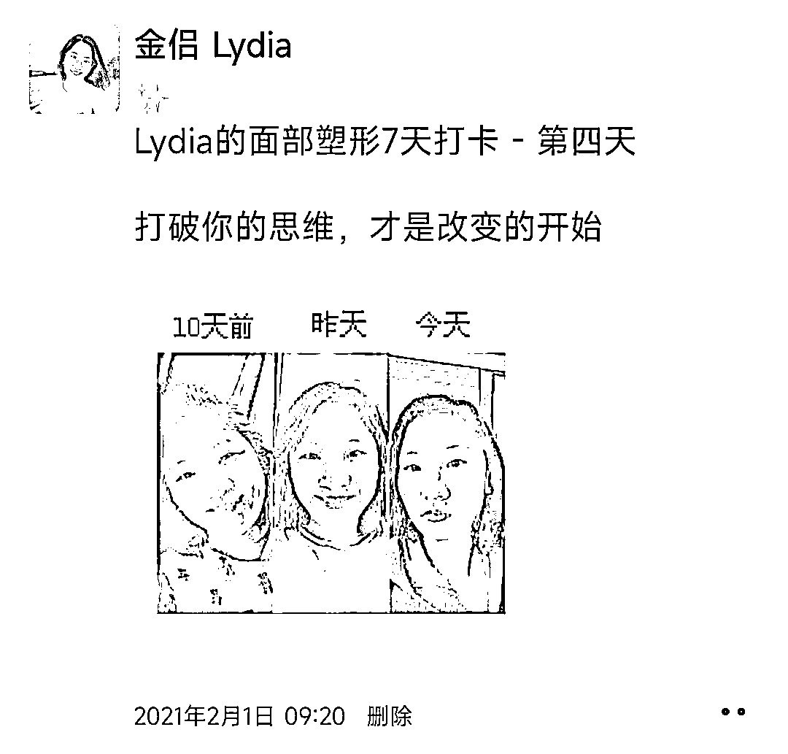
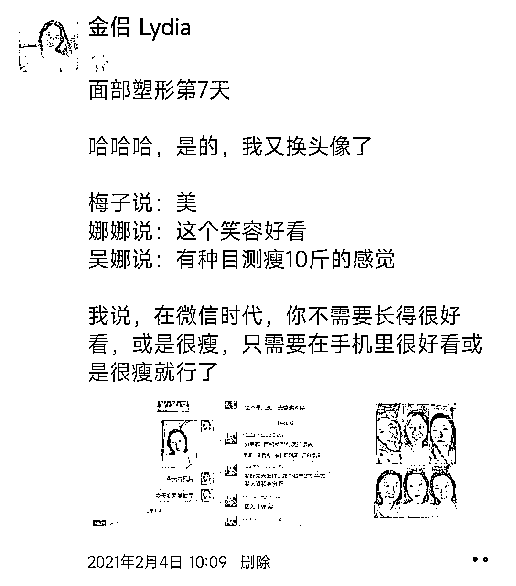
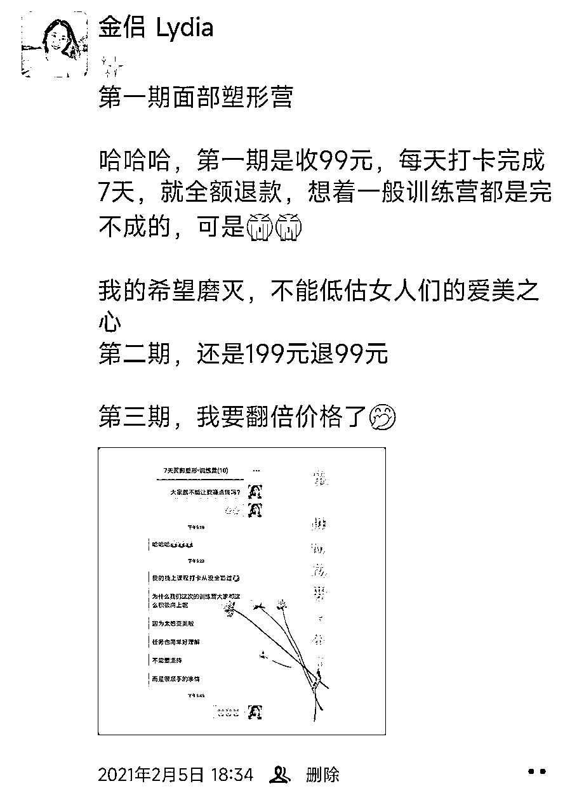
这种知识付费的边学边教变现，是很多普通人就可以尝试的，但是开始变现，需要突破两大心理卡点：
那我们首先可以反问自己，为什么你要把自己知识和经验分享给你信任的朋友？一定是因为这个知识的本身对朋友是有价值的。
而我们要明白，付费是一种筛选的过程，所以朋友圈里定价自己的，对这个课程有兴趣的朋友圈自动会报名。另外，付费才会让自己和用户更加重视，而双方都重视，效果才会更好。
我知识付费的开启模式，就是99元打卡返现，后续一期一期涨价。当自己的水平不够，可以通过打卡返现的方式，找到自己的种子用户。
去年7月， 群买买开始在朋友圈刮风的时候，那会儿我刚从香港回到宁波，正在宁波维也娜酒店集中隔离。
当时我的学习重心是视频号直播，在勤勤恳恳地直播了31天后，我获得了很多流量，可是发现知识付费课程的复利性不好，而要产生复利，最好的方式，就是让用户可以重复的购买。
就这样，我把群买买当作是我初探社交电商的一次学习，从微商模式，到淘客的变现逻辑，还有社交电商平台的制度和佣金体系。
跨行业的学习，短短几天的学习，又进一步打开了我的思维。就这样，2021年8月2号我正式入局群买买，把它作为8月重要的一个副业项目去做。
我想如果我可以0成本投入1个月赚1000元，这个项目可能也适合别的宝妈。 没有想到我一个月内竟然可以赚到3000元。到目前为止，我就拥有近3000位宝妈店主团队。
在流量变现的最大卡点，就是当你频繁在推荐不同的产品时，你是否会迷失自己的定位？打破这个卡点的方式，我觉得公域平台里的内容输出，是需要垂直，细分，精准。
可是在私域里，普通人不需要有太垂直的定位，更重要是从工具人里脱离，突出你自己的真实，有血有肉的人，因为私域的变现核心，就是信任。
所以即使我不断地变化不同的副业项目，只要有信任在，我的产品可以满足用户的需求，就可以做到流量互通变现。
提供服务，是普通人可以快速入门的线上副业，门槛低，比如社群运营或是云客服，基本花上1月份的培训就可以上岗了，目前这类的工作机会还是很多的。
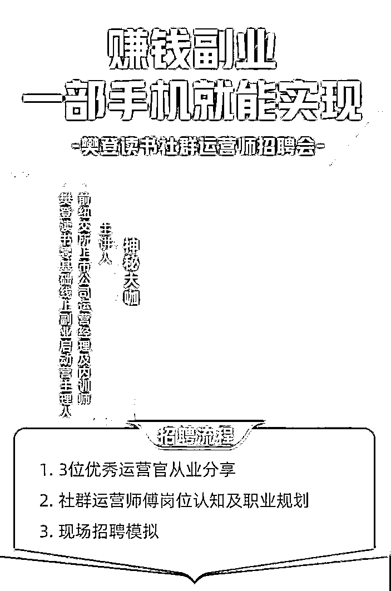
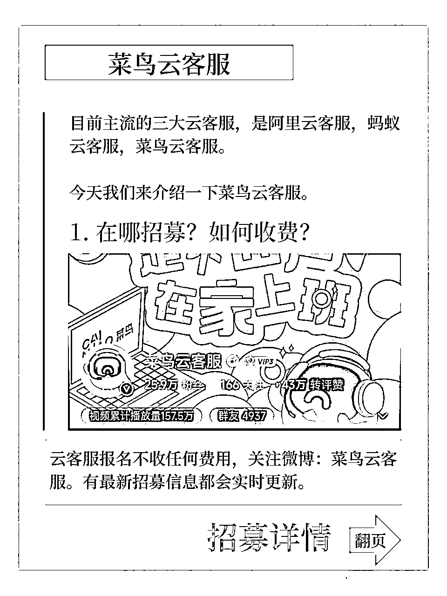
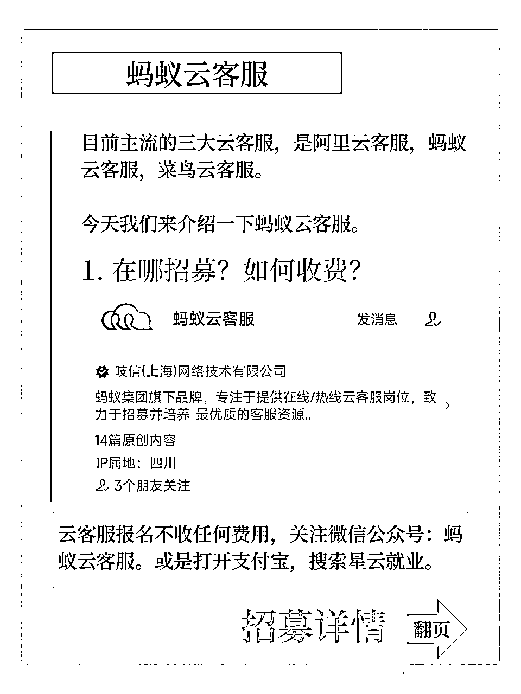
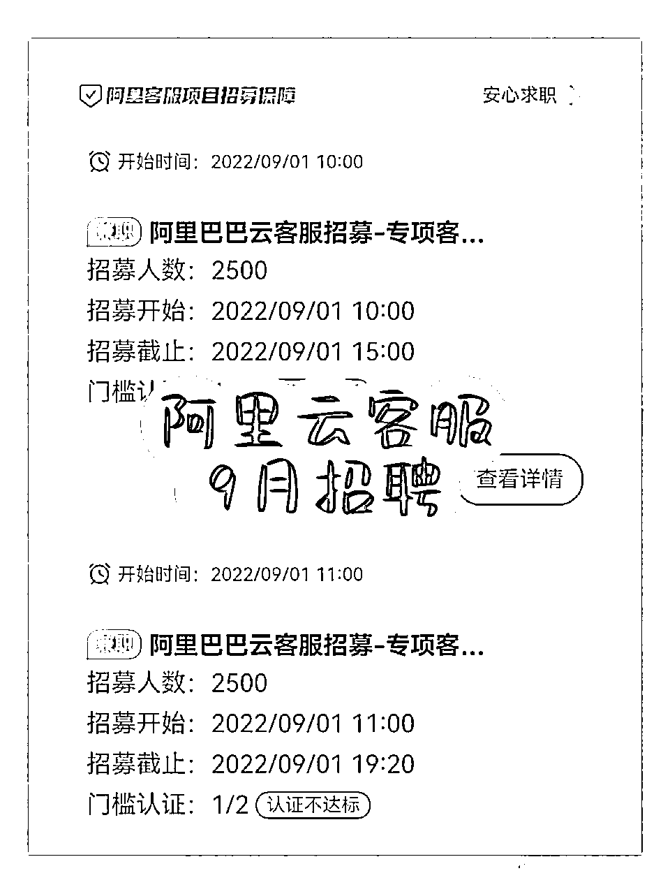
但是这其实是一种出卖时间的兼职，赚得少，做这类副业最重要是管理好自己的时间。
这类花时间的工作，不建议作为长期的副业选项，但是却是可以让你快速启动副业的方式之一。
从长远看，最核心的还是需要让我们的时间精力分配在更能复利的地方，同时尽可能的，让多份副业之间能相互联系和助力。
妈妈们的时间和精力是非常有限，把不同的副业分享到不同时间段去做，我的几个对策是：
我早上的工作效率很低，但是晚上相对安静的环境呢，我就可以比较高效的工作。自由支配时间，就是要利用我精力最充沛的时候去做一些更高效的工作。
比如说我会在做饭的时候去听课，也会在平时在路上坐车的时候呢，去做一些不需要集中注意才能做的副业，比如在社群里推荐产品。
可以思考一下，哪些副业需要整块时间（自媒体写作），哪些副业可以用碎片的时间(社群卖货)，哪些副业可以同步一起做(我常常会同步几个群一起开会，哈哈哈)。
虽然我是有非常多的副业的，但是不同副业的轻重缓急都是不同的，要根据自己的节奏去有效地安排。
同时也可以根据自己的时间去放弃一些花时间特别多的这种副业。比如去年，我做了非常多的短期课程训练营，但是今年我基本上都没有在做，把时间放到更能产生复利效果的。
很多宝妈是有时间的，但是却提不起能量做任何事，要学适当的能量管理。在自己精力充沛的时间段，实现高效的工作，这也是节约时间的一个秘籍。
感谢生财有术，我是今年通过@走心小姐姐@醒醒加入进来的，但是我对生财有术的认识已经有一段时间了，去年还作为嘉宾在香港还参加了一次生财夜话的活动。
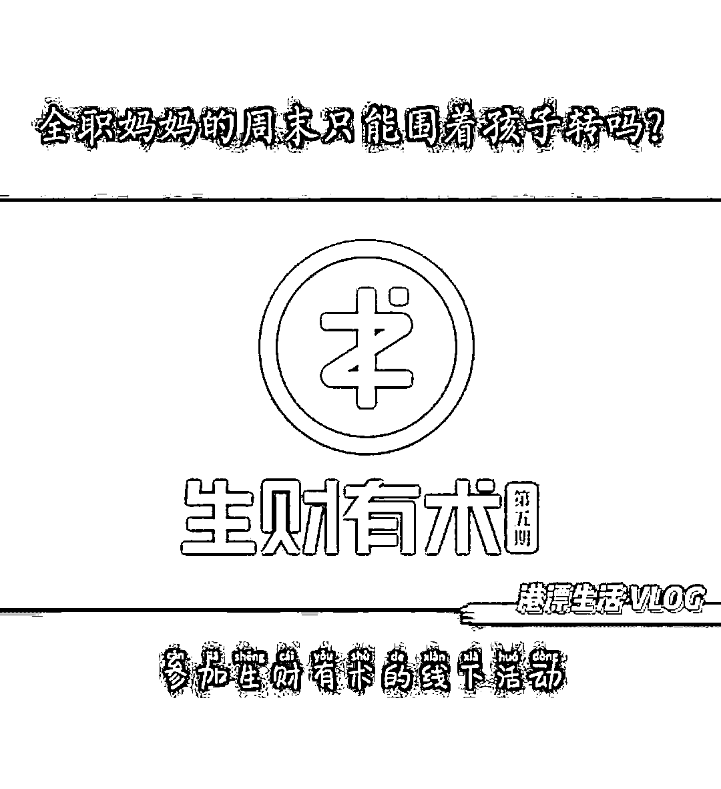
今年加入进来后，参加两次的小航海认识了好几位优秀的实战派船长，优秀的圈友，弥补对于不同副业平台的认知，学习到了很多新的赚钱思路。
好了，我的分享就到这里了，总结一下
纯小白，花时间提升自己的能力和技能，建立势能差。我们走的每一步，都藏着未来的影子。
谢谢你能耐心看到这里，我会一直很努力跟上，希望今天的分享能对你有一些些借鉴和启发，欢迎圈友们链接多多交流！
- 知识星球